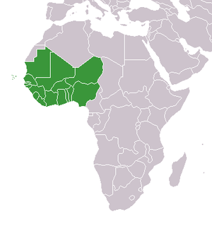

People lived in West Africa for hundreds of thousands of years as hunter-gather tribes then eventually formed larger groups of people and expanded their territory. Medieval empires in West Africa were very powerful, in 1300 at it's peak the Empire of Mali was the wealthiest empire in Africa. In the Renaissance Portugeses slave traders set up establishments in West Africa and began the slave trade soon after. In the 18 and 1900's a number of nations colonized Africa, including France, the Netherlands, England, and more.
West Africa is the westernmost region of Africa, right next to the Atlantic Ocean. It's located just below North Africa, and it includes Ghana, Mali, Nigeria, Guinea, and several other countries. Over 400 million people live there now, and it's largest city is Lagos, Nigeria.
A map of West Africa
History and Geography of West Africa Akan and Mande culture Music of the Akan and Mande People